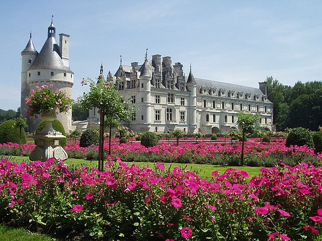
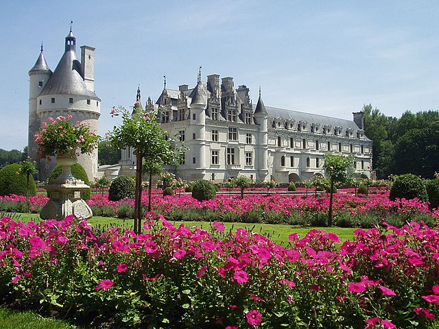
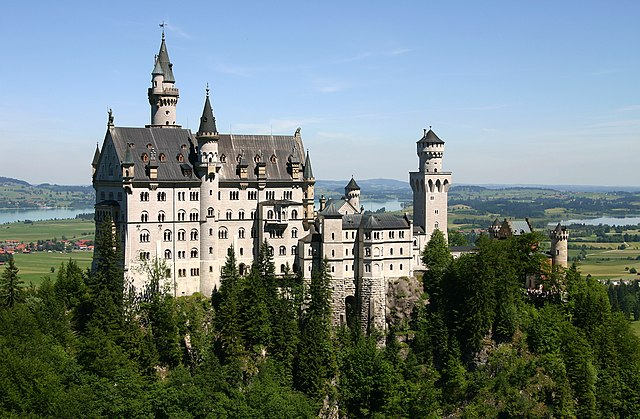

Buckingham Palace
is the London residence and administrative headquarters of the monarch of the United Kingdom. Located in the City of Westminster, the palace is often at the centre of state occasions and royal hospitality. It has been a focal point for the British people at times of national rejoicing and mourning. Originally known as Buckingham House, the building at the core of today's palace was a large townhouse built for the Duke of Buckingham in 1703 on a site that had been in private ownership for at least 150 years.
Fmore visit Wikipedia website 

The Château de Chenonceau
a French château spanning the river Cher, near the small village of Chenonceaux, Indre-et-Loire, Centre-Val de Loire. It is one of the best-known châteaux of the Loire Valley. The estate of Chenonceau is first mentioned in writing in the 11th century. The current château was built in 1514–1522 on the foundations of an old mill and was later extended to span the river.
For more visit Wikipedia website

Neuschwanstein Castle
is a 19th-century historicist palace on a rugged hill above the village of Hohenschwangau near Füssen in southwest Bavaria, Germany. The palace was commissioned by King Ludwig II of Bavaria as a retreat and in honour of Richard Wagner. Ludwig chose to pay for the palace out of his personal fortune and by means of extensive borrowing, rather than Bavarian public funds.
For more visit Wikipedia website